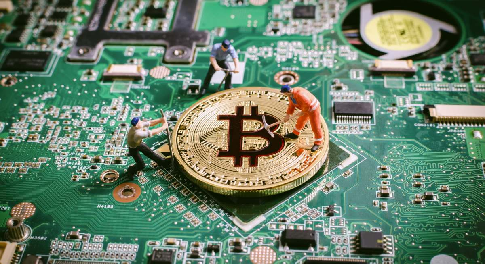
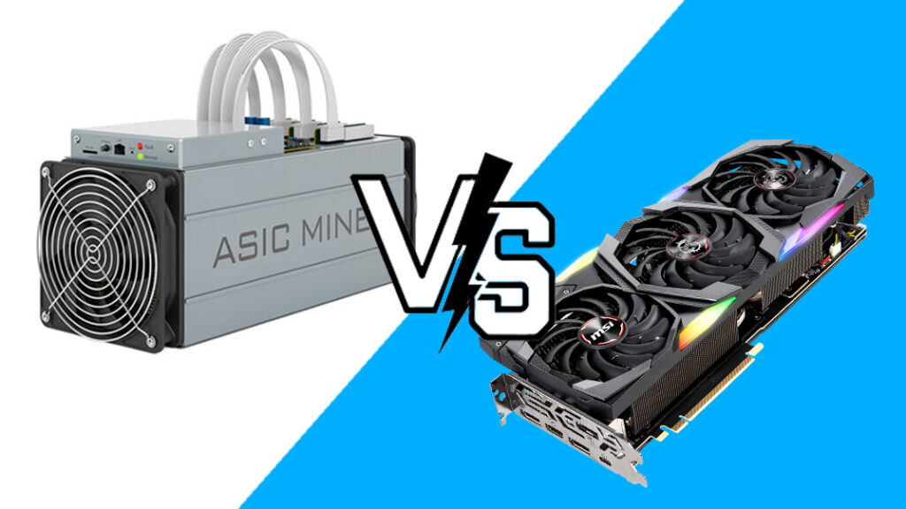

Minería en criptomonedas
Que es la minería?
La minería es uno de los conceptos que más nos confunde por primera vez.
Como en Bitcoin (o cualquier otra blockchain) no hay banco que revise que no envíes
el mismo dinero 2 veces, necesitamos a alguien que empaquete las transacciones de la
Mempool (sala de espera), las ordene en un bloque y las agregue a la blockchain.
Pero, ¿quién decide qué persona o computadora tiene el derecho de escribir ese nuevo bloque?
Si cualquier persona pudiera hacerlo gratis, un hacker podría crear millones de cuentas falsas
y alterar los registros. Por eso, Bitcoin exige un requisito: para escribir un bloque,
tienes que demostrar que gastaste trabajo y energía eléctrica. A esto se le llama
Prueba de Trabajo (Proof of Work).

¿Cómo funciona el trabajo del minero paso a paso?
=> PASO 1:
El minero entra a la Mempool, toma miles de transacciones pendientes (priorizando las que pagan comisiones más altas ya que, entre más altas sean, él ganará más obviamente) y las organiza para empaquetarlas en un nuevo bloque.
=> PASO 2:
Lo que Bitcoin le da al minero
Cuando un minero va a empaquetar un nuevo bloque, Bitcoin le entrega una hoja de datos fija que incluye:
- La lista de transacciones que ocurrieron en ese momento (ej: Pepito le envió 0.1 BTC a Fernanfloo).
- El hash único del bloque anterior (para encadenarlos).
- La fecha y hora actual (timestamp).
Luego, el minero junta el Merkle Root + el Hash del bloque anterior + el Timestamp + la Dificultad actual + la Versión. Si hasheas ese bloque de texto (con SHA-256), genera un resultado fijo como por ejemplo: "b221d9dbb08...".
El problema es que Bitcoin impone una regla estricta:
para que el bloque sea válido, su hash final debe empezar con cierta cantidad de ceros (por ejemplo: 0000000000000000000abcdef...).
Lo que el minero tiene que hacer
Como los datos del bloque no se pueden cambiar (no puede cambiar la fecha y hora o cuanto dinero le envió Pepito a Fernanfloo), Bitcoin le permite al minero agregar un único número variable al final del bloque. A este número aleatorio se le llama Nonce (Number used ONCE).
El trabajo del minero es un proceso de prueba y error.
1. Toma los datos del bloque + un número (ej. Nonce=1)
2. Lo pasa por SHA-256 y, por ejemplo, sale (a8f9c...)
3. Empieza, por ejemplo, por 18 ceros? NO
4. Cambia el nonce a 2 (none=2) y repite el proceso millones o incluso billones de veces por segundo. Precisamente aquí radica el problema, la computadora necesita ser potente para calcular el hash (SHA-256) millones de veces.
=> PASO 3:
Una de las millones de computadoras mineras del mundo adivina el número (nonce) antes que las demás. Anuncia el resultado a toda la red, los nodos revisan en un milisegundo que la respuesta sea correcta y que las transacciones sean válidas, y se agrega el bloque a la blockchain.
=> PASO 4:
Recompensa: El minero cuya computadora ganó, se queda con todas las comisiones y Bitcoin emite una cantidad fija de bitcoins completamente nuevos como premio para el minero por gastar su electricidad
Gracias a esto, la minería cumple 2 propósitos:
1. Seguridad: Al hacer que cueste mucho dinero y electricidad proponer un bloque, se vuelve económicamente imposible para un hacker engañar al sistema.
2. Emision de dinero: Es la única forma en la que nacen nuevos bitcoins al mundo. No los imprime un gobierno; se "emiten" automáticamente como premio al minero que valida el bloque.
En resumen: Un minero es una computadora especializada que compite en una carrera de velocidad para resolver un acertijo aleatorio. La primera que lo resuelve gana el derecho de procesar las transacciones y recibe una recompensa en bitcoins por su trabajo
Dato curioso: El Nonce es un número de 32 bits y solo permite probar unas 4.29 mil millones de combinaciones. Las máquinas de minería actuales (ASICs) prueban billones de combinaciones por segundo, así que agotan todos los Nonces posibles en segundos. Cuando se les acaban, cambian un pequeño dato en la transacción de recompensa (llamado ExtraNonce) y vuelven a empezar de cero.
PoW: Proof of Work
En el mundo digital es muy fácil copiar y pegar archivos. Si tienes un PDF o una
foto, puedes duplicarla mil veces. Si el dinero fuera digital y sencillo de
duplicar, la gente intentaría gastar sus mismos bitcoins dos veces (lo que se
conoce como el problema del doble gasto)
Para evitar eso, Satoshi Nakamoto (creador de Bitcoin) pensó:
Para que alguien pueda publicar un nuevo bloque de transacciones, debe demostrar
que gastó dinero real en energía y procesamiento computacional.
El minero le presenta a toda la red una "prueba" (el hash que empieza por ceros) de
que su computadora hizo un "trabajo" pesado (probar billones de nonces hasta acertar).
Hash rate, recompensa y Halving
HASH RATE
El Hash Rate es la velocidad o la potencia de cálculo combinada de todas las
computadoras (mineros) que están intentando resolver el acertijo matemático de
Bitcoin en un momento dado.
Se mide en: Hashes por segundo ($H/s$). Hoy en día la red de Bitcoin opera en
escalas de EH/s (Exahashes por segundo), lo que significa quintillones de intentos
por segundo.
¿Por qué importa? A mayor Hash Rate, más segura es la red.
Si el Hash Rate es extremadamente alto, se vuelve imposible para un atacante
malintencionado juntar la suficiente potencia de cómputo para alterar las
transacciones.
El Hash Rate sube cuando entran más mineros (o máquinas más
potentes) y baja si los mineros apagan sus equipos porque no les resulta rentable.
LA RECOMPENSA
Bueno, el paso 4 era la recompensa pero no me detuve a explicarlo a detalle:
La recompensa se compone de 2 partes:
Recompensa Total = Subsidio de Bloque (Bitcoins nuevos) + Comisiones de transacción
- Subsidio de bloque: Bitcoins recién creados que el protocolo emite desde cero.
Es la única forma en la que nacen nuevos bitcoins en el mundo.
- Comisiones (Fees): El total de las pequeñas propinas que pagaron los usuarios en
la Mempool para que sus transacciones fueran procesadas rápidamente en ese bloque.
EL HALVING
si se crean nuevas bitcoins para los mineros (subsidio del bloque) entonces porque
se dice que solo existen 21 millones de bitcoins?
El Halving (reducción a la mitad) es un evento programado en el código de Bitcoin
que ocurre exactamente cada 210,000 bloques (aproximadamente cada 4 años).
Su función es reducir a la mitad el subsidio de bloque (los bitcoins nuevos que se
emiten). Satoshi Nakamoto diseñó esto para garantizar que solo existan 21 millones
de bitcoins en la historia y evitar la inflación.
Pools de minería, ASIC vs GPU y consumo energético
ASIC vs. GPU (el hardware)
En los primeros días de Bitcoin (2009-2010), la gente minaba utilizando el procesador de su
computadora (CPU). Con el tiempo, la dificultad aumentó y los mineros buscaron chips más potentes pero los procesadores
comunes no eran suficiente por lo que buscaron soluciones y encontraron 2:
GPU:
- Son las famosas tarjetas de video estándar que se usan en las computadoras para videojuegos o diseño 3D (Nvidia, AMD).
- Puede calcular algoritmos de minería, pero también procesar gráficos o renderizar video.
- El problema: Ya no sirve para minar Bitcoin (su potencia no alcanza frente a la dificultad actual). Sin embargo, aún se utiliza
para minar otras criptomonedas cuyos algoritmos previenen el uso de chips especializados.
ASIC
- Es un chip diseñado en silicio con un único propósito exclusivo en la vida: calcular el algoritmo SHA-256 de Bitcoin
lo más rápido posible.
- ASIC no puede renderizar un video ni abrir un navegador; solo procesa hashes de Bitcoin.
- Es miles de veces más eficiente y rápido que miles de GPUs juntas para Bitcoin.

Mining Pools (Pools de minería)
Hoy en día, el Hash Rate global de Bitcoin es tan ridículamente alto que si conectas un solo equipo ASIC en tu casa, la probabilidad de que tu máquina adivine el Nonce antes que el resto del mundo es casi cero. Literalmente, podrías pasar 10 años con la máquina encendida sin ganar un solo centavo. Para resolver esto, nacieron los Pools de minería:
Un Pool es una cooperación de miles de mineros pequeños y medianos repartidos por el mundo que combinan la potencia de cálculo de sus computadoras para actuar como un solo minero gigante.
El beneficio: En lugar de esperar años para acertar un bloque por tu cuenta y ganar la recompensa completa, al unirte a un pool recibes pagos pequeños, constantes y diarios proporcionales a la potencia de cómputo que aportaste a la red.
Consumo energético: ¿Por qué consume tanta electricidad?
La seguridad de Proof of Work se basa en el gasto de energía del mundo real. Para intentar falsificar una transacción en la blockchain, un atacante no solo necesita software (programas): necesita comprar millones de dólares en equipos físicos y pagar facturas de luz gigantescas para moverlos. La electricidad actúa como un ancla al mundo físico que protege el registro digital.